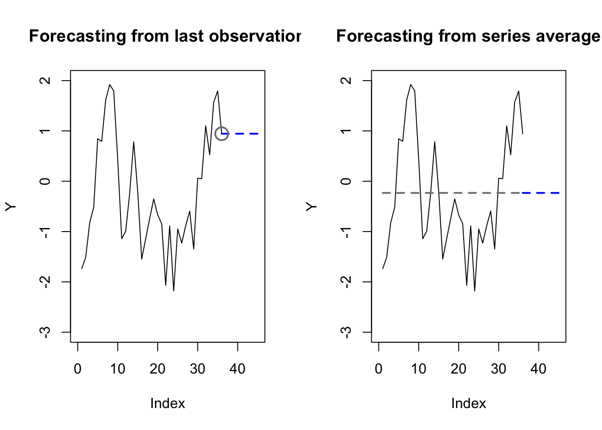
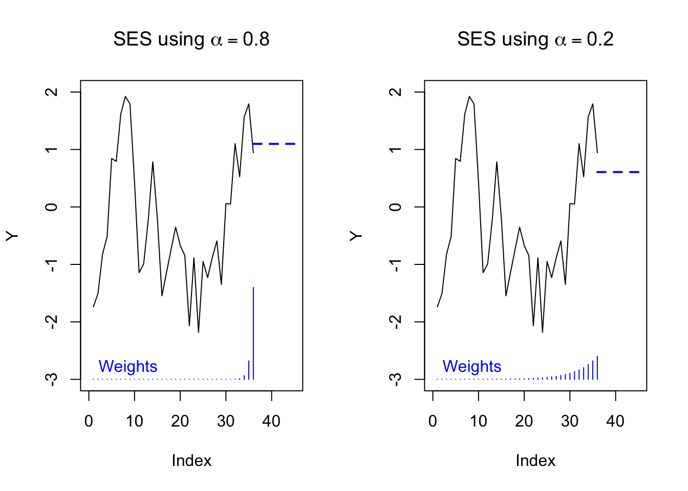
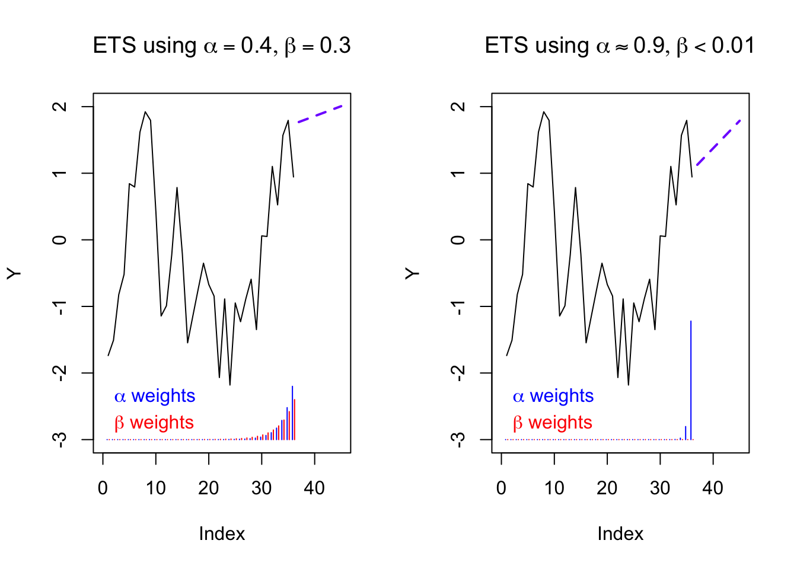
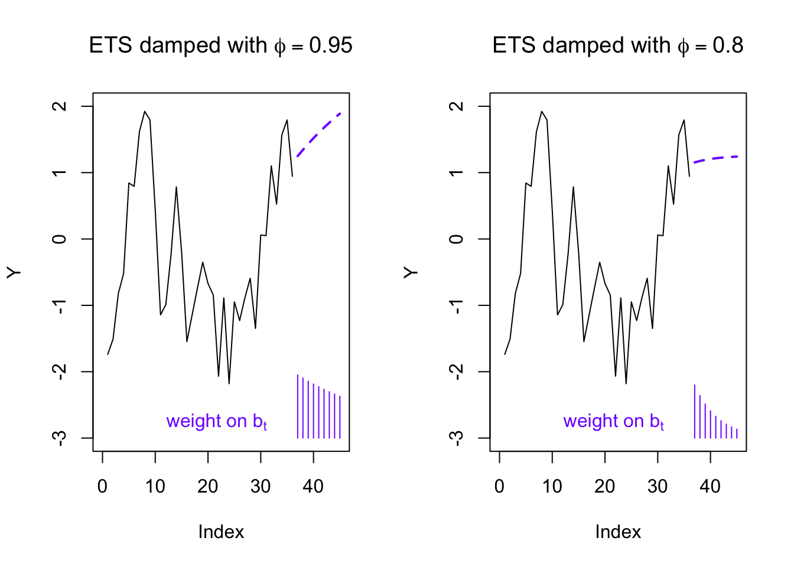
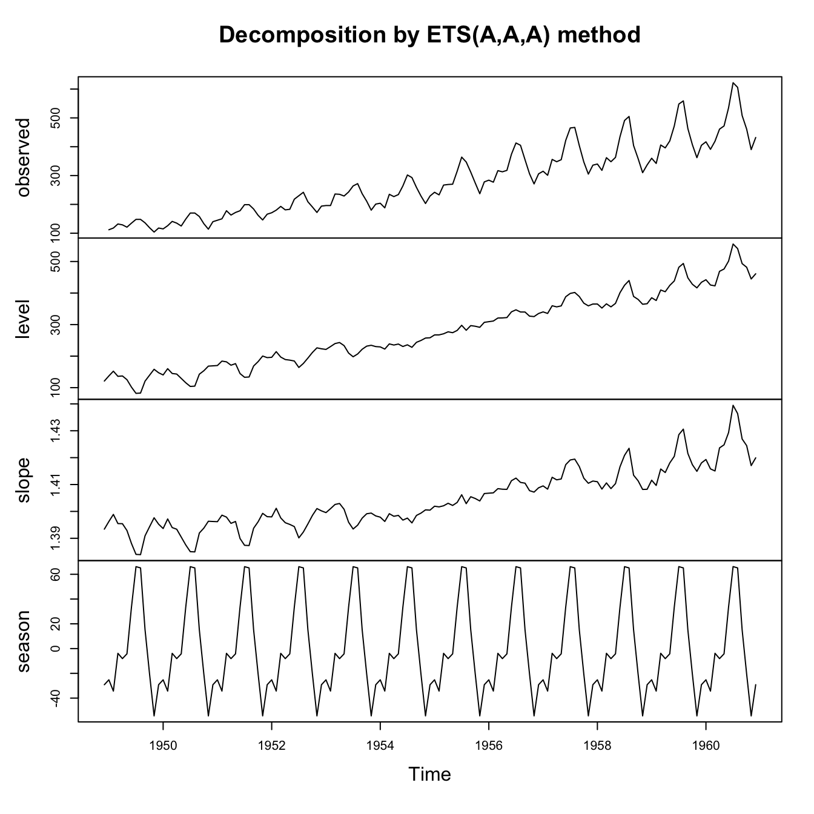
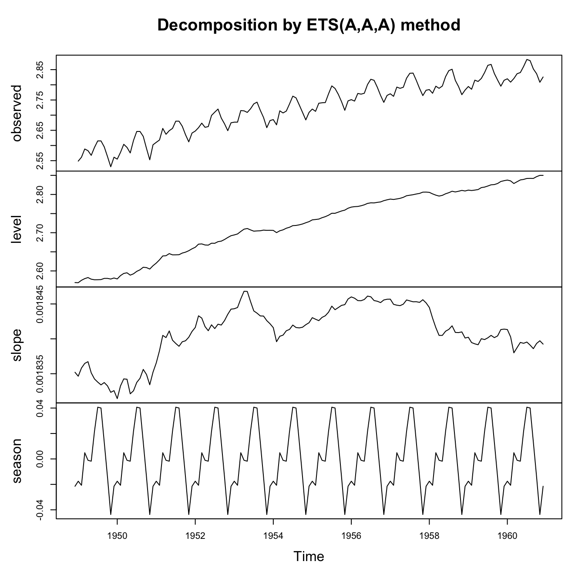
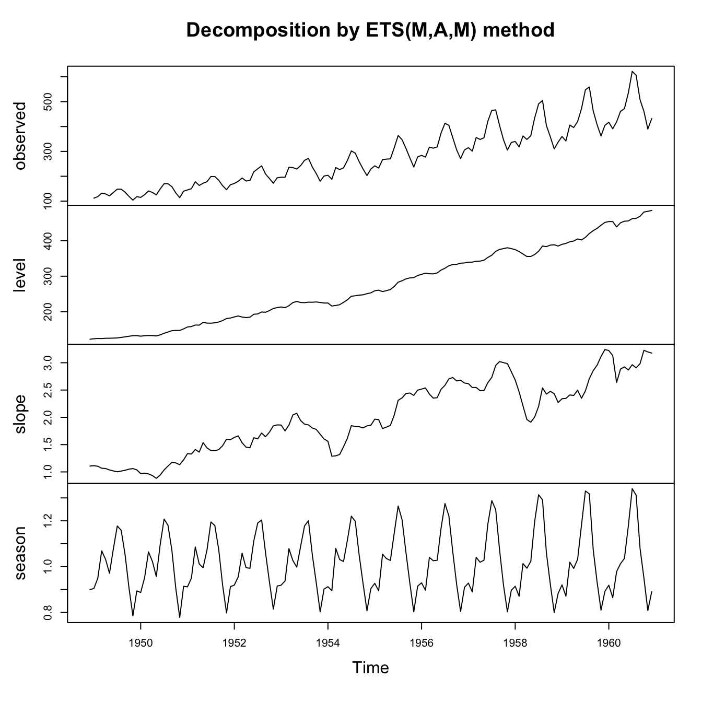

library(forecast)ETS models
Having learned one major class of time series models — ARIMA models — let’s learn a second class of models to compare and contrast. This new group of models is collectively referred to as exponential smoothing. These models are sometimes also called “ETS” which stands for error, trend, seasonality.
Simple exponential smoothing
The motivation for exponential smoothing is described well by Hyndman and Athansopoulous when they note the usefulness of a middle ground between two simple forecasting methods: dragging the last observations, and averaging the whole series:
Code
par(mfrow=c(1,2))
set.seed(0117)
y <- arima.sim(list(ar=0.9),50)[5:40]
plot(y,type='l',xlim=c(0,45),ylab='Y',ylim=c(-3,2),
main='Forecasting from last observation')
lines(x=c(36,45),y=rep(y[36],2),lwd=2,lty=2,col='#0000ff')
points(x=36,y=y[36],pch=1,cex=2,col='#7f7f7f',lwd=2)
plot(y,type='l',xlim=c(0,45),ylab='Y',ylim=c(-3,2),
main='Forecasting from series average')
lines(x=c(36,45),y=rep(mean(y),2),lwd=2,lty=2,col='#0000ff')
lines(x=c(1,36),y=rep(mean(y),2),col='#7f7f7f',lwd=2,lty=2)
The last observation tends to overfit — time series rarely stay in exactly the same place – and it also ignores the vast majority of the data. The series average tends to underfit — it doesn’t use any time series information at all — and it equally weights observations which may no longer be relevant.
There is a middle way. The most recent observation can get the most weight, and yet all observations will get some weight, with older observations receiving exponentially less weight:
\[\hat{y}_{t+1} = \alpha y_t + \alpha (1 - \alpha) y_{t-1} + \alpha (1 - \alpha)^2 y_{t-2} + \ldots\]
Let us note a few properties of this equation before going further:
I have written the equation using \(y_t\) instead of \(Y_t\), signaling to you that we need not associate this time series with probability distributions of a set of random variables. We can view exponential smoothing as a type of machine learning model, not parametric statistical inference.1
The sum of the weights, \(\sum_{i=0}^\infty \alpha (1 - \alpha)^i\) will add up to 1 only when \(\alpha \in (0,1)\) and when the series is truly infinite. However, our sample of data is finite, so the weights of our smoothing will not exactly equal 1.
At this time, the equation does not account for any trend over time or any seasonality. In other words, the forecast for all future forecast periods will be equal to the forecast for time \(t+1\).
By changing \(\alpha\) we can change the “memory” of the equation. Higher values of \(\alpha\) correspond to a short memory, closer to the last observation. Lower values of \(\alpha\) correspond to a long memory, closer to the series average:
Code
par(mfrow=c(1,2))
ses80 <- y%*%(0.8*0.2^(35:0))
ses20 <- y%*%(0.2*0.8^(35:0))
plot(y,type='l',xlim=c(0,45),ylab='Y',ylim=c(-3,2),
main=expression(paste('SES using ',alpha == 0.8)))
lines(x=c(36,45),y=rep(ses80,2),lwd=2,lty=2,col='#0000ff')
segments(x0=1:36,y0=-3,y1=2*0.8*0.2^(35:0)-3,col='#0000ff')
text(0,-2.8,'Weights',col='#0000ff',pos=4)
plot(y,type='l',xlim=c(0,45),ylab='Y',ylim=c(-3,2),
main=expression(paste('SES using ',alpha == 0.2)))
lines(x=c(36,45),y=rep(ses20,2),lwd=2,lty=2,col='#0000ff')
segments(x0=1:36,y0=-3,y1=2*0.2*0.8^(35:0)-3,col='#0000ff')
text(0,-2.8,'Weights',col='#0000ff',pos=4)
Hyndman and Athansopoulos reformulate exponential smoothing into two phases. First, they define a smoothing series which iterates over each observation in the data, using the previous smoothing series value to help estimate the next smoothing series value. Second, they define a forecasting equation which uses the smoothing series to predict arbitrarily far into the future from any point.
Note
Let \(\boldsymbol{y}\) be a time series observed during the regular time periods \(T = \{1, 2, \ldots, n\}\). For some parameters \(\alpha \in (0,1)\) and \(\ell_0 \in \mathbb{R}\), iteratively define the smoothing series \(\boldsymbol{\ell}\) as follows:
\[\ell_t = \alpha y_t + (1 - \alpha) \ell_{t-1}\]
And for a specific time index \(\tau\) and an integer look-ahead period \(h\), define the forecasting series \(\hat{y}_{\tau+h|\tau}\) as follows:
\[\hat{y}_{\tau+h|\tau} = \ell_\tau\]
Together, we refer to these two series as a simple exponential smoothing (SES) model.
(This may feel very anticlimactic or unnecessarily complicated, but it is a scaffolding on which we will build features to capture trend and seasonality.)
Estimating an exponential smoothing model
Recently, exponential smoothing models have been synthesized with state space models, which allows them to be solved using methods common to the rest of statistical inference: distributional assumptions followed by likelihood optimization (including partial, quasi, or conditional likelihood) via gradient descent or other search techniques.
However, we will discuss more basic techniques here which do not require distributional theory.
The forecasting method above suggests an error equation for each observation \(y_t\) as compared to its prior-period forecast, \(\hat{y}_{t|t-1}\):
\[e_t = y_t - \hat{y}_{t|t-1}; \qquad \textrm{SSE} = \sum_{t=1}^n e_t^2\]
The two parameters which control this sum of squared errors are \(\alpha\), the smoothing parameter, and \(\ell_0\), the choice of the initial level (recall that each \(\ell_i\) is defined iteratively, and so there is no definition for \(\ell_0\)). Therefore, using a Least Squares solution method, we may estimate:
\[\hat{\alpha}, \hat{\ell}_0 = \mathop{\textrm{argmin}}_{\alpha \in (0,1); \ell \in \mathbb{R}} \textrm{SSE}\]
Although this optimization cannot be solved as easily as OLS equations (we do not have a closed form solution which works for every dataset, such as \(\hat{\boldsymbol{\beta}} = (\mathbf{X}^T\mathbf{X})^{-1}\mathbf{X}^t\boldsymbol{y}\)), we can still solve easily enough with algorithmic techniques.
Adding a trend component
When our data trend in one direction due to random walk behavior, we should not incorporate the seeming trend into our predictions, but when the data trend due to deterministic drift, then it would make sense to incorporate this trend into our forecasts.
The slope of the trend will depend on which observations we use as our training sample. Just as before, we have a choice between using all of the data (underfitting) or only the most recent data (overfitting). And just as before, it makes sense to split the difference with another exponential smoothing filter:2
Note
Let \(\boldsymbol{y}\) be a time series observed during the regular time periods \(T = \{1, 2, \ldots, n\}\). For some parameters \(\alpha, \beta \in (0,1)\) and \(\ell_0, b_0 \in \mathbb{R}\), iteratively define the level series \(\boldsymbol{\ell}\) and the trend series \(\boldsymbol{b}\) as follows:
\[\ell_t = \alpha y_t + (1 - \alpha)(\ell_{t-1} + b_{t-1})\]
\[b_t = \beta(\ell_t - \ell_{t-1}) + (1 - \beta)b_{t-1}\]
And for a specific time index \(\tau\) and an integer look-ahead period \(h\), define the forecasting series \(\hat{y}_{\tau+h|\tau}\) as follows:
\[\hat{y}_{\tau+h|\tau} = \ell_\tau + hb_t\]
Together, we refer to these three series as an exponential smoothing (SES) model with linear trend.
Notice that the new level estimate at each time period is a weighted average between (i) the current observation and (ii) the predicted value of the same observation. Likewise, the new trend estimate at each time period is a weighted average between (i) the most current change in the estimated levels and (ii) the predicted value of the same change in levels.
To estimate this model we would solve a least squares equation for \(\hat{\alpha}, \hat{\beta}, \hat{\ell}_0, \textrm{and } \hat{b}_0\).
Code
par(mfrow=c(1,2))
trend1 <- ets(y,model='AAN',damped=FALSE,alpha=0.4,beta=0.3)
trend2 <- ets(y,model='AAN',damped=FALSE)
plot(y,type='l',xlim=c(0,45),ylab='Y',ylim=c(-3,2),
main=expression(paste('ETS using ',list(alpha == 0.4, beta == 0.3))))
lines(x=c(37:45),y=forecast(trend1,h=9)$mean,lwd=2,lty=2,col='#7f00ff')
segments(x0=-0.2+(1:36),y0=-3,y1=2*0.4*0.6^(35:0)-3,col='#0000ff')
segments(x0=0.2+(1:36),y0=-3,y1=2*0.3*0.7^(35:0)-3,col='#ff0000')
text(0,-2.4,expression(paste(alpha,' weights')),col='#0000ff',pos=4)
text(0,-2.8,expression(paste(beta,' weights')),col='#ff0000',pos=4)
plot(y,type='l',xlim=c(0,45),ylab='Y',ylim=c(-3,2),
main=expression(paste('ETS using ',list(alpha %~~% 0.9, beta < 0.01))))
lines(x=c(37:45),y=forecast(trend2,h=9)$mean,lwd=2,lty=2,col='#7f00ff')
segments(x0=-0.2+(1:36),y0=-3,y1=2*trend2$par[1]*(1-trend2$par[1])^(35:0)-3,col='#0000ff')
segments(x0=0.2+(1:36),y0=-3,y1=2*trend2$par[2]*(1-trend2$par[2])^(35:0)-3,col='#ff0000')
text(0,-2.4,expression(paste(alpha,' weights')),col='#0000ff',pos=4)
text(0,-2.8,expression(paste(beta,' weights')),col='#ff0000',pos=4)
Adding a damped trend component
Extrapolating trends into the future is a dangerous business. My newborn daughter has gained about 30 grams (or 1 ounce) per day over the past two weeks. This trend, well-defined over my entire sampling period, suggests that by the time she’s twenty years old, she will weigh 220 kilograms (or 480 pounds).
Because linear extrapolation can so often lead to unrealistic forecasts, sometimes we choose to “dampen” a forecasted trend, meaning that we allow the slope to gradually become flat. The mechanism here will be a new exponential term \(\phi\), which is usually set close to 1. From the equations below you can see that when \(\phi \approx 1\) it will not greatly change the iterative smoothing series, but that it will increasingly change the forecasted slope when extrapolating to large look-ahead periods \(h\):
Note
Let \(\boldsymbol{y}\) be a time series observed during the regular time periods \(T = \{1, 2, \ldots, n\}\). For some parameters \(\alpha, \beta, \phi \in (0,1)\) and \(\ell_0, b_0 \in \mathbb{R}\), iteratively define the level series \(\boldsymbol{\ell}\) and the trend series \(\boldsymbol{b}\) as follows:
\[\ell_t = \alpha y_t + (1 - \alpha)(\ell_{t-1} + \phi b_{t-1})\]
\[b_t = \beta(\ell_t - \ell_{t-1}) + (1 - \beta) \phi b_{t-1}\]
And for a specific time index \(\tau\) and an integer look-ahead period \(h\), define the forecasting series \(\hat{y}_{\tau+h|\tau}\) as follows:
\[\hat{y}_{\tau+h|\tau} = \ell_\tau + (\phi + \phi^2 + \ldots + \phi^h)b_t\]
Together, we refer to these three series as an exponential smoothing (SES) model with a damped linear trend.
Code
require(forecast)
par(mfrow=c(1,2))
trend1 <- ets(y,model='AAN',damped=TRUE,alpha=0.8,beta=0.1,phi=0.95)
trend2 <- ets(y,model='AAN',damped=TRUE,alpha=0.8,beta=0.1,phi=0.8)
plot(y,type='l',xlim=c(0,45),ylab='Y',ylim=c(-3,2),
main=expression(paste('ETS damped with ',phi == 0.95)))
lines(x=c(37:45),y=forecast(trend1,h=9)$mean,lwd=2,lty=2,col='#7f00ff')
segments(x0=37:45,y0=-3,y1=0.95^(1:9)-3,col='#7f00ff')
text(10,-2.8,expression(paste('weight on ',b[t])),col='#7f00ff',pos=4)
plot(y,type='l',xlim=c(0,45),ylab='Y',ylim=c(-3,2),
main=expression(paste('ETS damped with ',phi == 0.8)))
lines(x=c(37:45),y=forecast(trend2,h=9)$mean,lwd=2,lty=2,col='#7f00ff')
segments(x0=37:45,y0=-3,y1=0.8^(1:9)-3,col='#7f00ff')
text(10,-2.8,expression(paste('weight on ',b[t])),col='#7f00ff',pos=4)
Adding an additive seasonal component (Holt-Winters models)
Often the data show such a clear seasonality (let’s say with period \(m\)) that it would be foolish not to use this information when performing forecasting or smoothing the historical values. Once again we are confronted with the dilemma of estimating the seasonality from the entire series (which uses more data, but possibly includes stale data), or estimating the seasonality from only the most recent season (which keeps only the freshest values, but might lose helpful historical context). And once again, we thread the needle by exponentially up-weighting the most recent data and down-weighting the oldest data, using a new smoothing parameter which may be estimated from the data.
Exponential smoothing models with seasonal components are sometimes called Holt-Winters models. Let us start by defining an additive seasonal component.3
Note
Let \(\boldsymbol{y}\) be a time series observed during the regular time periods \(T = \{1, 2, \ldots, n\}\). For some parameters \(\alpha, \beta, \phi, \gamma \in (0,1)\) and \(\ell_0, b_0, s_0, s_{-1}, \ldots, s_{1-m} \in \mathbb{R}\), iteratively define the level series \(\boldsymbol{\ell}\), the trend series \(\boldsymbol{b}\), and the seasonal series \(\boldsymbol{s}\) as follows:
\[\ell_t = \alpha (y_t - s_{t-m}) + (1 - \alpha)(\ell_{t-1} + b_{t-1})\]
\[b_t = \beta(\ell_t - \ell_{t-1}) + (1 - \beta) b_{t-1}\]
\[s_t = \gamma(y_t - \ell_t) + (1 - \gamma) s_{t-m}\]
And for a specific time index \(\tau\) and an integer look-ahead period \(h\), define the forecasting series \(\hat{y}_{\tau+h|\tau}\) as follows:
\[\hat{y}_{\tau+h|\tau} = \ell_\tau + hb_t + s_{\tau - (h \,\textrm{mod}\, m)}\]
Together, we refer to these four series as a Holt-Winters model with additive seasonality.
Code
air.ets1 <- ets(AirPassengers,model='AAA',damped=FALSE)
plot(air.ets1)
The plot above shows how an ETS model with trend and seasonality might be fit to a real-world dataset (here, the classic Box-Jenkins dataset of monthly airline passengers). Note that we see signs of an imperfect fit:
Looking at the top plot of the original data, the seasonal variance seems to be growing proportionally with the mean number of passengers.
Looking at the bottom plot of the estimated seasonal effects, they seem to be nearly constant over time.
Looking at the second plot of the estimated level, we see that the level has been co-opted into “fixing” the mistakes being made by the seasonal series. In earlier years the level counteracts the seasonality, muting the effects, while in later years the level complements the seasonality, amplifying the effects.
This model isn’t necessarily bad, but we might be able to improve it.
Exponential smoothing models with multiplicative components
Sometimes the seasonality effects on a series are additive/linear: for example, the difference between daytime and nighttime temperatures is fairly steady in Chicago whether it’s January (mean temperature 0 C) or July (mean temperature 30 C).
Other times the seasonality effects on a series are multiplicative/proportional: for example, a small florist’s shop might notice a +15% revenue increase in February, around Valentine’s Day. This 15% increase might persist as the business grows from monthly revenues of $10,000 to $100,000 to $1,000,000.
Hyndman and Athanasopoulous present the formulae describing multiplicative seasonality and present a taxonomy of ETS models which include multiplicative trend effects as well.
Even in cases when seasonality looks multiplicative, a logarithmic (or any appropriate Box-Cox) transformation might convert the series back to additive errors and additive seasonality. Compare three models for the classic Box-Jenkins airline passengers data:
Code
air.ets1 <- ets(AirPassengers,model='AAA',damped=FALSE)
plot(air.ets1)
legend(x='topleft',legend=c('Observations','Smoothing fit'),lty=1,col=c('#000000','#0000ff'),bty='n')
Code
air.ets2 <- ets(AirPassengers,model='AAA',damped=FALSE,lambda='auto',biasadj=TRUE)
plot(air.ets2)
legend(x='topleft',legend=c('Observations','Smoothing fit'),lty=1,col=c('#000000','#0000ff'),bty='n')
Code
air.ets3 <- ets(AirPassengers,model='MAM',damped=FALSE)
plot(air.ets3)
legend(x='topleft',legend=c('Observations','Smoothing fit'),lty=1,col=c('#000000','#0000ff'),bty='n')
Although all of these models succeed in decomposing or explaining much of the variance in this seasonal time series, we might find ways to choose between them. We could look at which series had the cleanest residual patterns, or best look-ahead forecasting accuracy, or lowest AIC, or (as here) lowest in-sample RMSE:
Code
air.ets.summ <- rbind(sqrt(air.ets1$mse),
sqrt(mean((AirPassengers-air.ets2$fitted)^2)),
sqrt(air.ets3$mse))
colnames(air.ets.summ) <- c('In-sample RMSE')
rownames(air.ets.summ) <- c('AAA, no Box-Cox', 'AAA, w/ Box-Cox', 'MAM, no Box-Cox')
print(air.ets.summ) In-sample RMSE
AAA, no Box-Cox 17.01495
AAA, w/ Box-Cox 10.44758
MAM, no Box-Cox 11.26797I say we can view them as ML techniques, but it’s also possible to frame them as Gaussian state space models with well-defined distributions and likelihood functions.↩︎
Hyndman and Athanasopoulos use an alternative parameterization for \(\beta\) which takes a range of \((0,\alpha)\). What these lecture notes refer to as \(\beta\) is what their textbook refers to as \(\beta^*\).↩︎
Hyndman and Athanasopoulos use an alternative parameterization for \(\gamma\) which takes a range of \((0,1-\alpha)\). What these lecture notes refer to as \(\gamma\) is what their textbook refers to as \(\gamma^*\).↩︎